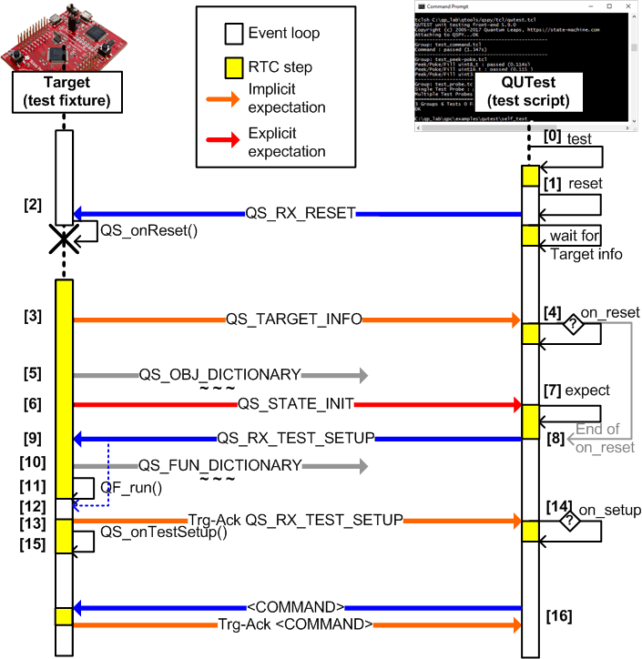
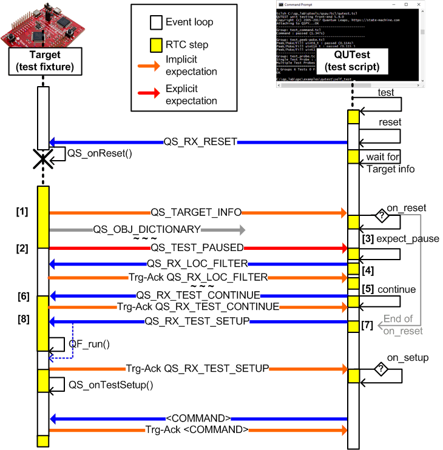
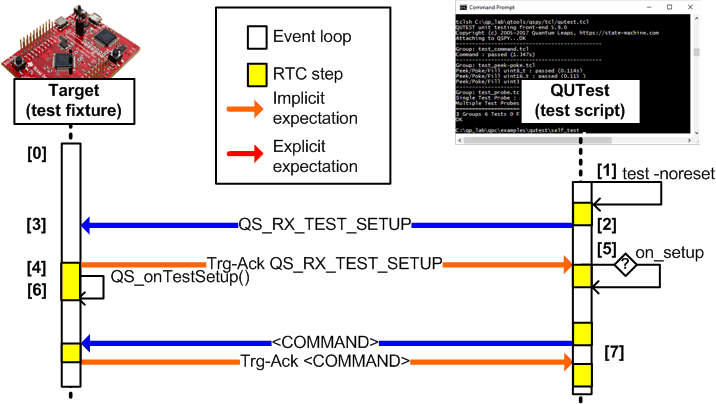
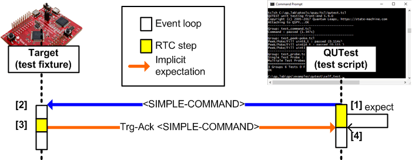
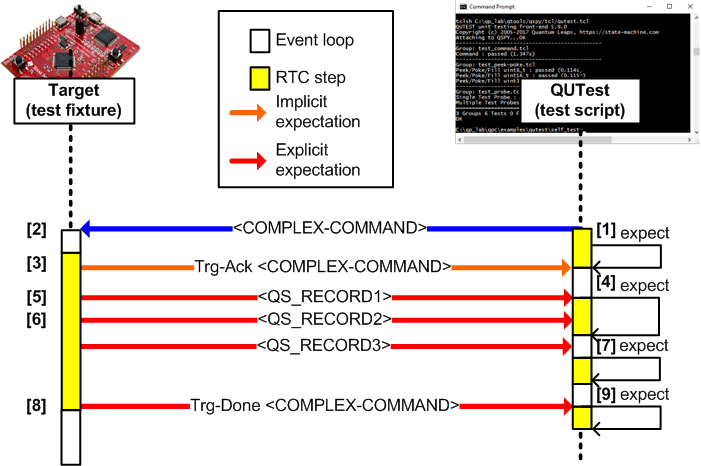

The central concept applied in QUTest is Run-to-Completion (RTC) processing, both in the test fixture (Target) and in the test script (Host). RTC processing means that the code progresses in discrete, uninterruptible steps and that new inputs (commands) are recognized only after the current RTC step completes.
Of course, it is not a coincidence that the RTC processing of QUTest matches exactly the RTC processing in event-driven systems of state machines. And the good news here is that for all interactions with state machines, the RTC output generated by a test fixture will correspond exactly to the RTC step in the state machine.
However, a bit more tricky parts are the system reset, test initialization, and general processing of commands issued by test scripts. The following sections explain these parts by means of annotated sequence diagrams.
Most individual tests in a test script, start with a clean target reset. The following sequence diagram shows the details of this process. The explanation section following the diagram clarifies the interesting points (labeled with [xx]). :

QS_RX_RESET request to the test fixture. After this, the test script enters a wait state in which it waits for QS_TARGET_INFO reply from the Target. NOTE: The Target reset can be suppressed by the
NORESEToption given in the test() command, which is illustrated in the NORESET Tests sequence diagram. Please note, however, that the first test in a test script (test group) and any test immediately following an "assertion-test" must cleanly reset the Target (so it cannot use theNORESEToption).
NOTE: Embedded Targets reboot automatically after resetting. In case of a host executable, however, QUTest™ (qutest.py) launches it again.
QS_TARGET_INFO reply to the test script. QS_TARGET_INFO reply, the test script attempts to execute the on_reset() procedure. If on_reset() is defined in the script, it runs at this time. (This scenario assumes that on_reset() is defined and runs until step [8]). NOTE: The QS dictionaries are consumed by QSPY and are not forwarded to the test script.
on_reset() procedure is the ideal place to handle such output. NOTE: The main purpose of the
on_reset()procedure is to consume any output generated during the reset RTC step as well as to perform any setup that should follow the Target reset. In principle, instead of codingon_reset(), you could place all this code directly at every test, but this would be repetitious and definingon_reset()allows you to avoid such repetitions.
on_reset() procedure ends and the test script sends QS_RX_TEST_SETUP to the Target. QS_RX_TEST_SETUP typically arrives while the test fixture still runs the initialization RTC. Therefore, QS_RX_TEST_SETUP is not processed immediately and its processing is delayed until the end of the current RTC step. QF_run(). QF_run() runs an event loop, in which it processes commands that have accumulated from the test script. QS_RX_TEST_SETUP, which has been waiting in the input buffer. QS_RX_TEST_SETUP is sent back to the test script Trg-Ack QS_RX_TEST_SETUP, the test script attempts to execute the on_setup() procedure. If on_setup() is defined in the script, it runs at this time. NOTE: The main purpose of the
on_setup()procedure is to consume any output generated from theQS_onTestSetup()callback in the test fixture invoked in the next step [15]. Note also theQS_onTestSetup()runs in all tests, including NORESET tests.
QS_onTestSetup() callback function in the Target. As explained in the previous section, the initialization RTC step in the test fixture extends throughout main(), from the beginning till the final call to QF_run(). The test fixture is unable to process any commands from the test script until the end of this long RTC step, which can limit the flexibility of the test fixture.
For example, consider the test fixture in the DPP example for QUTest (directory qpc/examples/qutest/dpp/test/). This test fixture reuses the main() function from the actual DPP application, which starts multiple active objects. To enable unit testing of a specific single active objects, it would be very convenient if the test script could set up the QS Local Filter for the chosen active object component. Such local filter would then select the output, such as initialization from a given AO. But the problem is that such local filter requires the QS object dictionary to be already transmitted to QSPY. On the other hand, the local filter needs to take effect before the AOs are started. In other words, the initialization RTC step needs to be split into shorter pieces, right after sending the dictionaries, but before starting active objects.
For such situations, QUTest provides the QS_TEST_PAUSE() macro, which pauses the execution of an RTC step and enters an event loop within the test fixture. This, in turn, allows the test fixture to process any commands from the test script, before the RTC continues to completion (or to another QS_TEST_PAUSE(), if needed).
The following test fixture code illustrates the use of the QS_TEST_PAUSE() macro:
The following sequence diagram shows the details of pausing a test. The explanation section following the diagram clarifies the interesting points (labeled with [xx]). :

NOTE: The best place to put expect_pause() is the on_reset() callback function, which should be defined in test scripts corresponding to test fixtures that call QS_TEST_PAUSE().
The following test script code illustrates the use of the expect_pause() and continue_test() commands:
In some tests, you specifically don't want to reset the Target, but rather you want to pick up exactly where the previous test left off. For example, you wish to test a specific state of your state machine, which you reached by dispatching or posting a specific sequence of events to it in the previous tests.
For such tests, you can suppress the target reset by following the test() command with the NORESET option. Such tests are called NORESET Tests.
The following sequence diagram shows the details of this process. The explanation section following the diagram clarifies the interesting points (labeled with [xx]). :

NOTE: The main purpose of the on_setup() callback is to consume any output generated from the QS_onTestSetup() callback in the test fixture invoked in the next step [6].
The use of assertions in embedded code (and especially in safety-critical code) is considered one of the best practices and the QP frameworks provide assertion facilities specifically designed for deeply embedded systems.
Assuming that you are using QP assertions in your code, an assertion failure can happen during a unit test. When it happens, the test fixture will produce the non-maskable QS_ASSERT_FAIL trace record. When this record arrives during a regular test, it will not be expected, so the test will fail. This is exactly what you want, because a failing assertion represents an error, which needs to be fixed.
However, sometimes you exactly want to test the assertion code itself, so you intentionally force an assertion in your test. In that case an assertion failure is expected and the test passes when assertion fails. Such tests are called "Assertion Tests" and QUTest™ has been specifically designed to support such tests.
Here is an example of an "Assertion Test":
As you can see, the test ends with an explicit expectation of an assertion failure: expect('@timestamp =ASSERT= Mod=qf_actq,Loc=...'). This is very easy and natural in QUTest.
Simple test script commands do not produce any output from the Target, except only the "Trg-Ack" (acknowledgement). Examples of <SIMPLE-COMMAND> include glb_filter(), loc_filter() and current_obj(),

<SIMPLE-COMMAND> to the test fixture. <SIMPLE-COMMAND>). <SIMPLE-COMMAND>, the test script enters an implicit expect state, in which it waits for the "Trg-Ack <SIMPLE-COMMAND>" output from the Target. The processing of the <SIMPLE-COMMAND> ends when the next output received from the Target matches exactly the expected output. Complex test script commands might produce some output from the Target, not just the "Trg-Ack" (acknowledgement). Examples of <COMPLEX-COMMAND> include dispatch(), post() and tick(),

<COMPLEX-COMMAND> to the test fixture. <COMPLEX-COMMAND>). <COMPLEX-COMMAND> must be followed in the test script by the explicit expect() commands that concume any ouptu produced by the command. Next: QUTest™ Tutorial